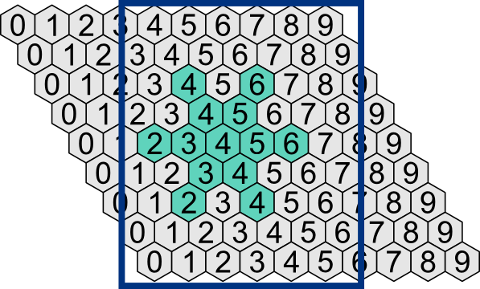

Прочтите статью Снежинки и клеточные автоматы. Для описания состояний клеток мы будем использовать двумерный список, а "живые" клетки рисовать кружочками в вершинах сетки из равносторонних треугольников.
Если использовать нумерацию столбцов, как на рисунке ниже, можно не учитывать чётность ряда. При этом "лишние" уголочки можно не учитывать и считать их клетки "мёртвыми". Прямоугольной рамкой обведена часть поля, которая должна отображаться на экране (следует рассчитать количество рядов так, чтобы изображение получилось почти квадратным).

A. Пусть имеется квадратный холст со стороной SIZE. Нарисуйте кружочки диаметра d в узлах треугольной сетки (сторона равносторонних треугольников равна DX). Высоту треугольников DY вычислите по теореме Пифагора. Учтите, что объекты, нарисованные за границами холста, не приводят к ошибке, а просто не отображаются на экране.
B. Напишите функцию, создающую двумерный список, описывающий состояние клеточного автомата из YN строк и XN столбцов. Все значения элементов списка должны быть равны 0, кроме "живой" снежинки в центре "мира".
С. Напишите функцию, которая нарисует кружочки в узлах треугольной сетки, соответствующих значениям 1 из двумерного списка предыдущей задачи.
D. Напишите функцию, которая вычисляет число "живых" соседей у клетки с координатами (x, y) (с учётом чётности y). Чтобы не было проблем с граничными значениями, можно сразу добавить в список два лишних нулевых столбца и два лишних нулевых ряда.
E. Напишите функцию, которая, используя правило из статьи, вычисляет новый двумерный список, описывающий состояние клеток. Напишите функцию step() (и добавьте соответствующую кнопку), которая покажет это состояние с помощью кружочков, расEположенных в узлах треугольной сетки.
F. Напишите функцию run(), которая через каждые sleep_time секунд будет показывать смену состояний системы, пока не нажмут кнопку "Пауза".
G. Добавьте в программу глобальную переменную, которая будет считать "время", прожитое системой. По достижении некоторого момента снежинка должна опять начать рост с начального состояния.